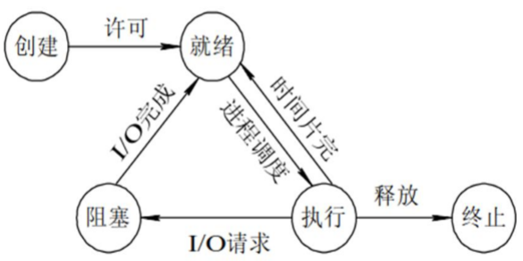
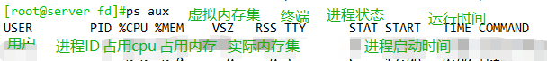
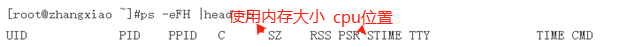
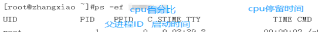
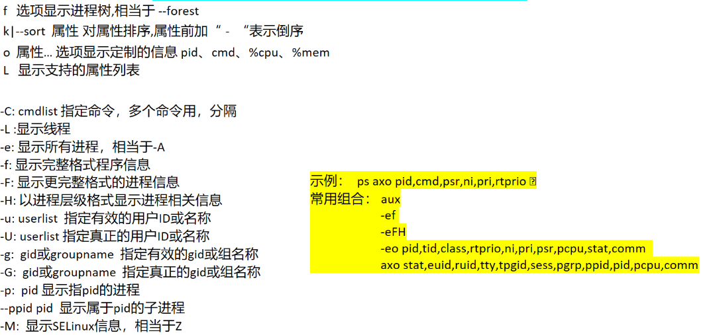
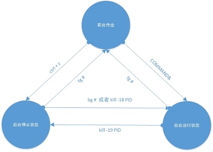

进程概念
内核的功用：进程管理、文件系统、网络功能、内存管理、驱动程序、安全功能等
Linux系统各进程的相关信息均保存在/proc/PID目录下的各文件中
Process: 运行中的程序的一个副本，是被载入内存的一个指令集合
进程ID（Process ID，PID）号码被用来标记各个进程
UID、GID、和SELinux语境决定对文件系统的存取和访问权限
通常从执行进程的用户来继承
存在生命周期
进程process和线程thread
进程:相当于一个任务(项目)，需要人员(线程)、资源(内存空间，文件等)，完成该任务的集合
线程:相当于进程中的人员，也就是说，线程属于进程
同一个进程中的线程之间使用的资源是共享的,因此线程之间会相互影响
进程和进程之间不共享资源，因此彼此之间不会相互影响
进程和线程的关系：一对一、一对多的关系，进程占用的资源更多
task struct：Linux内核存储进程信息的数据结构格式
task list：多个任务的的task struct组成的链表
进程创建：
init：第一个进程
进程：都由其父进程创建，父子关系，CoW fork(), clone()
进程创建基于CoW
CoW copy on write 写时复制
创建子进程完毕以后，暂时不给子进程分配空间，只分配一个进程编号，此时子进程指向父进程的内存空间，和父进程共享相同的内存空间
当子进程的内容发生变化时，会给子进程分配一个新的内存空间，并把父进程的内容或数据复制给子进程，此时子进程指向新的内存空间，然后再对内容或数据进行修改
该过程类似于逻辑卷创建快照的过程
进程的基本状态
创建状态：进程在创建时需要申请一个空白PCB(process control block进程控制块)，向其中填写控制和管理进程的信息，完成资源分配。如果创建工作无法完成，比如资源无法满足，就无法被调度运行，把此时进程所处状态称为创建状态
就绪状态：进程已准备好，已分配到所需资源，只要分配到CPU就能够立即运行
执行状态：进程处于就绪状态被调度后，进程进入执行状态
阻塞状态：正在执行的进程由于某些事件（I/O请求，申请缓存区失败）而暂时无法运行，进程受到阻塞。在满足请求时进入就绪状态等待系统调用
终止状态：进程结束，或出现错误，或被系统终止，进入终止状态。无法再执行

运行——>就绪：
1，主要是进程占用CPU的时间过长，而系统分配给该进程占用CPU的时间是有限的；
2.在采用抢先式优先级调度算法的系统中,当有更高优先级的进程要运行时，该进程就被迫让出CPU，该进程便由执行状态转变为就绪状态。
就绪——>运行：运行的进程的时间片用完，调度就转到就绪队列中选择合适的进程分配CPU
运行——>阻塞：
正在执行的进程因发生某等待事件而无法执行，则进程由执行状态变为阻塞状态，如发生了I/O请求,从磁盘上读取一个文件，读取速度慢，该进程在没有获取到数据之前，处于阻塞状态
阻塞——>就绪:进程所等待的事件已经发生，就进入就绪队列
以下两种状态是不可能发生的：
阻塞——>运行：即使给阻塞进程分配CPU，也无法执行，操作系统在进行调度时不会从阻塞队列进行挑选，而是从就绪队列中选取
就绪——>阻塞：就绪态根本就没有执行，谈不上进入阻塞态
进程相关概念
进程优先级：
系统优先级：数字越小，优先级越高
0-139（CentOS4,5）
各有140个运行队列和过期队列
0-98，99（CentOS6）
实时优先级: 99-0 值最大优先级最高
nice值：-20到19，对应系统优先级100-139或99
Big O：时间复杂度，用时和规模的关系
O(1), O(logn), O(n)线性, O(n^2)抛物线, O(2^n)
进程优先级调整：
静态优先级：100-139
进程默认启动时的nice值为0，优先级为120
只有根用户才能降低nice值（提高优先性）
nice命令：
nice [OPTION] [COMMAND [ARG]...]
renice命令：
renice [-n] priority pid...
查看：
ps axo pid,comm,ni
进程内存
Page Frame：页框 存储页面数据 最小页框大小4k
LRU：Least Recently Used 近期最少使用算法 释放内存物理地址空间和线性地址空间
如内存中有长期不使用的数据 则被调出内存空间 当内存中有一数据被调用 则把其从内存的空间中移到首位 与当前内存空间的首位数据 调换位置 并将其它数据依次后推
MMU：Memory Management Unit 负责转换线性和物理地址
TLB：Translation Lookaside Buffer 译后备缓冲器,用于保存虚拟地址和物理地址映射关系的缓存
IPC: Inter Process Communication
同一主机：signal信号
shm：shared memory
semaphore：信号量 一种计数器
不同主机：socket：IP和端口号
RPC：remote procedure call
MQ：消息队列
物理地址空间(物理内存空间)和线性地址空间(虚拟内存空间)
物理地址空间：给进程实际分配的空间
虚拟内存空间：进程认为自己拥有主机全部的物理空间，但实际上该进程用不完全部的物理空间，因此需要模拟出一个虚拟内存空间来代替实际上的全部内存空间
MMU：把虚拟内存和物理内存做映射关系，把物理内存转换为虚拟内存
进程状态
Linux内核：抢占式多任务
进程类型：
守护进程: daemon,在系统引导过程中启动的进程，和终端无关进程
前台进程：跟终端相关，通过终端启动的进程
注意：两者可相互转化
进程状态：
运行态：running
就绪态：ready
睡眠态：sleep
可中断：interruptable
不可中断：uninterruptable
停止态：stopped 暂停于内存，但不会被调度，除非手动启动
僵死态：zombie 父进程结束前，子进程不关闭
睡眠态和停止态区别：
睡眠态可以还原，进程可以醒过来，可能是自己醒过来，也可能是人为干预醒过来
停止态只要人为不干预，无法醒过来，会停在内存中，不会有任何操作
僵死态：程序发生故障，进程已经死去，但是会一直占用内存不释放，僵死态进程无法处理
管理工具
进程的分类：
CPU-Bound：CPU密集型，非交互;只消耗cpu，如进行加减运算
IO-Bound：IO密集型，交互;读取或写入数据
Linux系统状态的查看即管理工具
查看进程：pstree，ps
进程优先级：nice，renice
搜索进程：pgrep，pidof
进程管理工具：uptime，top，htop(epel源)，kill，pkill，killall
内存查看工具：free，vmstat，pmap
系统资源(cpu,IO)统计vmstat，iostat，dstat(代替vmstat，iostat)
系统监控工具：glances(epel源)，dstat(需要安装)，iotop(需要安装)
系统文件查看工具：lsof
作业管理：jobs，fg，bg，nohup
查看进程树pstree
pstree 显示进程树 只显示名字
-p 显示进程及子进程pid
-a 相同名称的进程不合并显示 并且显示命令行参数
扩展：
进程的上下文切换：在不同cpu之间执行进程任务，切换的过程叫做上下文切换。
这种切换会消耗大量的资源
如apache服务并发性不够，不适合并发数量高的场景
该服务存在C10k问题，即进程并发数达到10万，会出现问题
查看进程工具ps
ps：process state，显示当前进程的状态
注意：ps显示当前进程的快照，该命令并不能动态跟踪进程状态，只能看到当时那个时间点的进程状态
Linux系统各进程的相关信息均保存在/proc/PID目录下的各文件中
UNIX风格 ：-A -e
BSD风格 ：a
GNU选项 如--help
BSD选项：默认显示当前终端中的进程
a 选项包括所有终端中的进程
x 选项包括所有终端的进程
u 选项显示进程所有者的信息
f 选项显示进程树,相当于 --forest(GNU风格选项)
k|--sort 属性 对属性排序,属性前加- 表示倒序
o 属性… 选项显示定制的信息 pid、cmd、%cpu、%mem
L 显示支持的属性列表
UNIX选项：
-C：cmdlist 指定命令，多个命令用，分隔
-L：显示线程
-e：显示所有进程，相当于-A
-f：显示完整格式程序信息
-F：显示更完整格式的进程信息
-H：以进程层级格式显示进程相关信息
-u：userlist 指定有效的用户ID或名称
-U：userlist 指定真正的用户ID或名称
-g：gid或groupname 指定有效的gid
-G：gid或groupname 指定真正的gid或组名称
-p：pid 显示指pid的进程
--ppid pid 显示属于pid的子进程
-M：显示SELinux信息，相当于Z
ps输出属性
VSZ: Virtual memory SiZe，虚拟内存集，线性内存
RSS: ReSident Size, 常驻内存集
STAT：进程状态
R：running
S: interruptable sleeping
D: uninterruptable sleeping
T: stopped
Z: zombie
+: 前台进程
l: 多线程进程
L：内存分页并带锁
N：低优先级进程
<: 高优先级进程
s: session leader，会话（子进程）发起者
ni: nice值
pri: priority 优先级
psr: processor CPU编号
rtprio: 实时优先级
示例： ps axo pid,cmd,psr,ni,pri,rtprio
常用组合：
aux
-ef
-eFH
-eo pid,tid,class,rtprio,ni,pri,psr,pcpu,stat,comm
axo stat,euid,ruid,tty,tpgid,sess,pgrp,ppid,pid,pcpu,comm




搜索进程
最灵活：ps 选项 | 其它命令
按预定义的模式：pgrep
语法：pgrep [options] pattern
该命令支持正则表达式
-u uid: effective user，生效者
-U uid: real user，真正发起运行命令者
-t terminal: 与指定终端相关的进程
-l: 显示进程名
-a: 显示完整格式的进程名
-P pid: 显示指定进程的子进程
按确切的程序名称：/sbin/pidof
pidof bash
uptime
uptime
显示结果中各项内容含义：
显示当前时间，系统已启动的时间、当前上线人数，系统平均负载（1、5、10分钟的平均负载，一般不会超过1）
系统平均负载:
指在特定时间间隔内运行队列中的平均进程数
通常每个CPU内核的当前活动进程数不大于3，那么系统的性能良好。如果每个CPU内核的任务数大于5，那么此主机的性能有严重问题
如果linux主机是1个双核CPU，当Load Average 为6的时候说明机器已经被充分使用
top
htop
kill
kill命令：
向进程发送控制信号，以实现对进程管理,每个信号对应一个数字，信号名称以SIG开头（可省略），不区分大小写

常用信号：man 7 signal
1) SIGHUP: 无须关闭进程而让其重读配置文件
2) SIGINT: 中止正在运行的进程；相当于Ctrl+c
3) SIGQUIT:相当于ctrl+\(相当于quit)
9) SIGKILL: 强制杀死正在运行的进程
15) SIGTERM：正常终止正在运行的进程
18) SIGCONT：继续运行
19) SIGSTOP：后台休眠
指定信号的方法：
(1) 信号的数字标识：1, 2, 9
(2) 信号完整名称：SIGHUP
(3) 信号的简写名称：HUP
按名称：killall [-SIGNAL] comm…
某应用程序具有多个进程号，使用该命令可以一次全部删除
pkill
-SIGNAL ：仅pkill可用
-u uid: effective user 生效者
-U uid: real user 真正发起运行命令者
-t terminal: 与指定终端相关的进程
-l: 显示进程名（pgrep可用）
-a: 显示完整格式的进程名（pgrep可用）
-P pid: 显示指定进程的子进程
free
vmstat
iostat
dstat
glances
iotop
lsof
作业管理
Linux的作业控制
前台作业：通过终端启动，且启动后一直占据终端
后台作业：可通过终端启动，但启动后即转入后台运行（释放终端）
让作业运行于后台
(1) 运行中的作业： Ctrl+z
(2) 尚未启动的作业： COMMAND &
后台作业虽然被送往后台运行，但其依然与终端相关；退出终端，将关闭后台作业。
如果希望送往后台后，剥离与终端的关系
nohup COMMAND &>/dev/null &
screen；COMMAND
注意：nohup命令把任务放到后台执行，断网也能继续执行该进程，并把输出结果存放到hohup.out文件中
远程执行大的任务建议开启screen或者nohup 以防止断网引起任务终止
查看当前终端所有作业：jobs
作业控制：
fg [[%]JOB_NUM]：把指定的后台作业调回前台
bg [[%]JOB_NUM]：让送往后台的作业在后台继续运行
kill [%JOB_NUM]： 终止指定的作业
kill命令发送信号：
18 把处于后台休眠的命令继续运行
19 把处于后台运行状态的命令继续睡眠
状态切换
三种状态：前台运行、后台停止、后台运行

并行运行
同时运行多个进程，提高效率
方法1
vi all.sh
f1.sh&
f2.sh&
方法2
(f1.sh&);(f2.sh&);(f3.sh&)
方法3
{ f1.sh& f2.sh& f3.sh& }
方法4：在脚本
{
com1
com2
}&